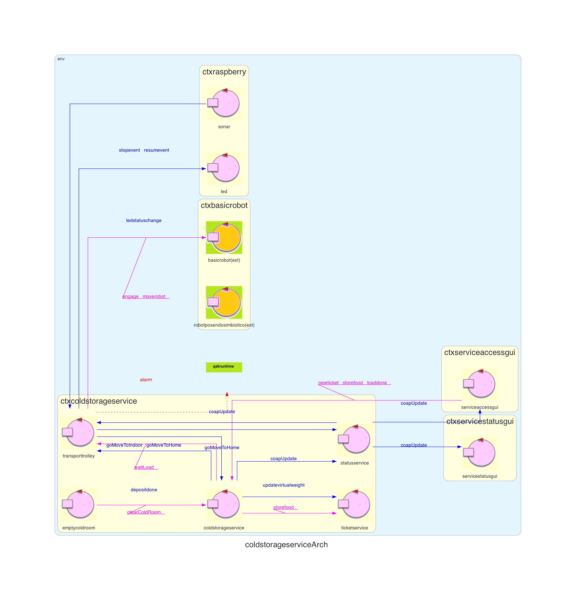

Introduction
Lo Sprint2 ha prodotto la seguente architettura:

Requirements
The system includes a a Sonar and a Led connected to a RaspnerryPi.
The Sonar is used as an ‘alarm device’: when it measures a distance less that a prefixed value DLIMT, the transport trolley must be stopped; it will be resumed when Sonar detects again a distance higher than DLIMT.
The Led is used as a warning devices, according to the following scheme:
Goal di questo sprint:
- the Led is off when the transport trolley is at HOME
- the Led blinks while the transport trolley is moving
- the Led is on when transport trolley is stopped.
- While the transport trolley is moving, the Alarm requirements should be satisfied. However, the transport trolley should not be stopped if some prefixed amount of time (MINT msecs) is not passed from the previous stop.
Goal di questo sprint:
- realizzazione degli Alarm Requirements (componenti Sonar e Led)
Requirement analysis
Dall'analisi dei requisiti si evince che:
- DLIMT è rappresentato con un valore intero positivo
- Il led deve lampeggiare durante tutta la durata della deposit action
- Il led sarà attivo nel caso in cui il robot venga fermato dal sonar (il quale ha rilevato una distanza minore di DLIMT) o nel caso in cui ci sia una collisione
- MINT è un valore intero positivo che rappresenta il tempo minimo che deve intercorrere tra due allarmi emessi dal sonar (Alarm Condition)
- home, il robot si trova fermo in home (coordinate (0,0))
- moving, il robot è in movimento e sta eseguendo una deposit action
- stopped, il robot è stato fermato dal sonar o ha avuto una collisione
Analisi del Problema
Led e sonar fisici
Su un RaspberryPi esterno all'applicazione sono collegati sonar e led fisici che vengono utilizzati rispettivamente come alarm e warning devices. Tali dispositivi sono d'interesse all'applicazione coldstorageservice in quanto deve rispettivamente ricevere/inviare informazioni da/verso di essi.Tali informazioni sono d'interesse al transporttrolley in quanto è l'unico che conosce il suo stato e l'unico che può interagire col BasicRobot. Per questo motivo si potrebbe pensare di far interagire direttamente led e sonar con esso. Questo però violerebbe il principio di singola responsabilità e renderebbe l'attore inutilmente più complesso. La soluzione migliore è quella di separare le funzionalità integrando altri due attori, LedSupport e SonarSupport, che si occuperanno di interagire con i singoli componenti.
Sonar
Il sonar è un dispositivo esterno che rileva distanze che sono d'interesse all'applicazione. Non tutti i dati del sonar sono d'interesse all'applicazione, ma solo il passaggio da una distanza minore di DLIMT ad una maggiore (o viceversa). Per questo motivo si può pensare di aggiungere direttamente sul componente in esecuzione sul RaspberryPi della logica applicativa per filtrare i dati rilevati ed emettere solo quelli significativi, in questo modo può inviare direttamente un messaggio di stop o di resume in base ai dati rilevati. Così facendo si riduce il traffico generato dal RaspberryPi, avendo però come effetto collaterale una dipendenza generata dal protocollo di comunicazione stabilito tra i componenti. Dato che il traffico generato è molto elevato gli effetti positivi superano l'unico svantaggio di tale soluzione.I dati significativi prodotti dal sonar verranno inviati direttamente al transporttrolley il quale li andrà a gestire.
Led
Il led è anch'esso un dispositivo esterno che indica lo stato attuale (home, moving o stopped) del transporttrolley. Dal transporttrolley non saranno emessi i singoli segnali sul pin che dovranno poi essere inviati al led fisico ma solamente lo stato in cui dovrà transitare. Sarà quindi compito di una logica applicativa locale (al raspberry) quella di interpretare tali stati e convertirli in impulsi verso il led fisico. Anche in questo caso si costruisce una dipendenza tra il transporttrolley e il RaspberryPi ma come nel caso precedente il disaccoppiamento supera di gran lunga gli effetti negativi.Anche in questo caso sono utilizzati dei messaggi per l'invio delle informazioni.
Architettura logica

Dall'architettua logica possiamo evidenziare i nuovi componenti:
Dall'architettua logica possiamo evidenziare i nuovi componenti:
- Sonar: componente fisico situato su RaspberryPi che si occupa di rilevare distanze ed utilizzato come alarm device
- Led: componente fisico situato su RaspberryPi usato come warning device
Progettazione
Contesto RaspberryPi
Sonar
Per la progettazione del sonar fisico si è seguito il principio di singola responsabilità. Per farlo sono stati sviluppati due script python:- SonarDevice.py (link all'implementazione): si occupa di leggere i dati prodotti dal sonar fisico e di comunicarli al
SonarFilter.py
- SonarFilter.py (link all'implementazione): si occupa di filtrare le misurazioni ricevute tramite il seguente controllo:
//last rappreseta l'ultimo valore letto dal sonar fisico //v rappresenta il valore attuale letto dal sonar fisico //limit rappresenta DLIMT if((last <= limit and v > limit) or (last > limit and v <= limit))
Grazie a questo vengono scartate tutte le misurazioni che non provocano l'emissione del messaggiosonardata
.
SonarDevice.py,
SonarFilter.pyviene realizzata tramite pipe.
I dati prodotti in uscita dalla pipe vengono letti dal CodedQActor Sonar (in esecuzione sul contesto raspberry) per poi essere inviati all'attore transporttrolley.
Led
Per la gestione del led fisico è stato sviluppato uno script python:- LedDevice.py (link all'implementazione): in base allo stato ricevuto gestisce il led fisico (accesso, spento, lampeggiante)
observeResource) mettendosi in attesa di ricevere da esso gli aggiornamenti sul cambiamento di stato (moving, home, stopped) che successivamente verranno inviate al LedDevice.py, il quale si occuperà di aggiornare il led fisico.
Contesto ColdStorageService
Eventi e messaggi emessi
alarm
(implementazione): evento inviato dal transporttrolley al BasicRobot per interrompere l'esecuzione del robot; inviato solamente se viene rispettata la Alarm Conditionstopevent
(implementazione): dispatch inviato dall'attore sonar (in esecuzione sul RaspberryPi) al transporttrolley per interrompere la deposit actionresumevent
(implementazione): dispatch inviato dall'attore sonar (in esecuzione sul RaspberryPi) al transporttrolley per riprendere la deposit action
TransportTrolley - Gestione di stopevent e resumevent
Nel caso in cui il robot sia in movimento e riceva il messaggiostopeventtransita nello stato
checkSonarData(implementazione).
Quindi, nello stato
checkSonarDatacontrolla se è passato un tempo maggiore di DLIMT dall'ultimo allarme ricevuto:
- In caso affermativo invia l'evento alarm al BasicRobot, il quale farà fermare il robot. Successivamente, se il robot si è realmente fermato, il transporttrolley transita
nello stato
stopped
dove rimane in attesa del messaggioresumevent
per poter riprendere l'esecuzione. - Altrimenti, il messaggio viene ignorato e il transporttrolley prosegue con quello che stava facendo.
stoppede riceva il messaggio
resumevent, esso transita nello stato
resuming(implementazione) in cui sfrutta la variabile
GoingToper permettere al transporttrolley di riprendere la corretta esecuzione.
Architettura logica finale
Test finale del sistema
Link ai test
Con il seguente test verranno testati alcune delle funzionalità chiavi dell'applicazione:
Per inibire l'invio di dati dal sonar fisico durante l'esecuzione del test (in quanto simulato) è possibile eseguire il ctxraspberry impostando la variable d'ambiente "SONAR_DISABLE".
In aggiunta per poter verificare il corretto funzionamento dei CoapUpdate è possibile eseguire anche la Servicestatusgui.
Con il seguente test verranno testati alcune delle funzionalità chiavi dell'applicazione:
- Creazione di un nuovo ticket
- Richiesta di carico da parte di un fridge truck driver
- Mentre viene eseguita la deposit action, viene richiesta la creazione di un secondo ticket e la relativa richiesta di carico. Questo viene fatto per verificare che il transporttrolley (terminata la deposit action) ritorni direttamente ad indoor (senza ritornare alla home) per gestire la nuova richiesta di carico
- Simulazione del sonar per l'emissione di un messaggio di stop e di resume
- Simulazione del sonar per l'invio di messaggio di stop che verrà ignorato non essendo passato un tempo sufficiente dall'ultimo stop
- Richiesta di carico con un ticket non valido
Per inibire l'invio di dati dal sonar fisico durante l'esecuzione del test (in quanto simulato) è possibile eseguire il ctxraspberry impostando la variable d'ambiente "SONAR_DISABLE".
In aggiunta per poter verificare il corretto funzionamento dei CoapUpdate è possibile eseguire anche la Servicestatusgui.
Esecuzione del sistema con docker
Si è scelto di utilizzare Docker per la distribuzione del sistema.
Per avviare il sistema dovranno essere eseguiti i seguenti comandi:
- BasicRobot: tramite il comando
docker-compose -f webbasicrobot23.yaml up
- RaspberryPi: tramite il comando
docker-compose -f raspberry.yaml up
- ColdStorageService, e le gui Serviceaccessgui, Servicestatusgui: tramite il comando
docker-compose -f coldstorage.yaml up